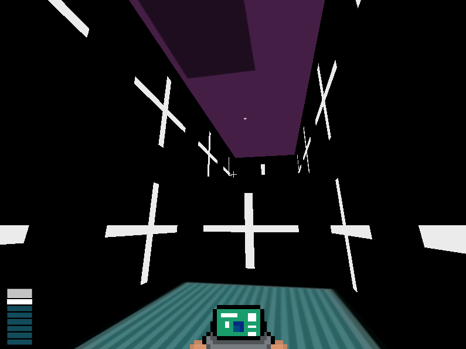

ЧТО_ТОПЕДИЯ свободная энциклопедия
Илья Мельников (imicles)
Программист, художник, аниматор.
Биография:
Родился 11 Янаваря 2003 года.
Творчество:
■ 21 февраля 2015 года imicles создал YouTube канал, на который публиковал в скором времени две пластелиновые анимации.
■ Известно, что Илья является создателем творческого объединения "Green Lamp", которую потом он с командой переименовал в "Cuboids UI". Как написал в закрытом паблике сам создатель:
"В связи с некоторыми проблемами с нашим прежним названием Green Lamp (данное название уже используется достаточно большим количеством других организаций), мы решили изменить своё название на Cuboids."
Фото:


Ссылки:
Вконтакте
YouTube